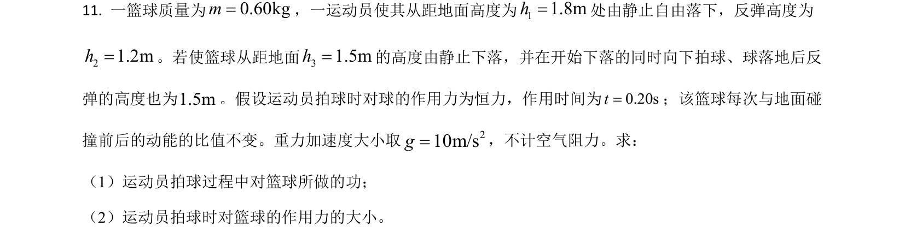
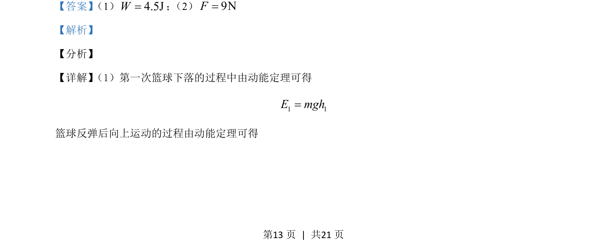
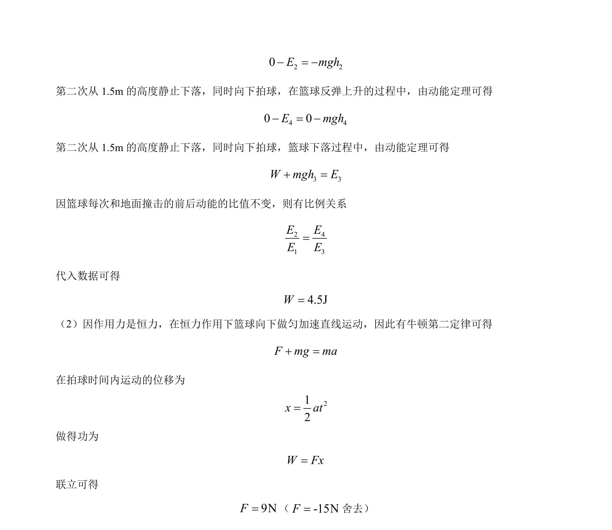

考点：动能定理 牛顿第二定律 功的计算
动能定理
牛顿第二定律
功的计算

本题通过动能定理和牛顿定律分析篮球下落反弹过程，涉及恒力做功与比例关系。


📄 原 PDF 第 13 页：素材/真题/吉林/2008-2024·（吉林）物理高考真题/2021年高考物理试卷（全国乙卷）（解析卷）.pdf
素材/真题/吉林/2008-2024·（吉林）物理高考真题/2021年高考物理试卷（全国乙卷）（解析卷）.pdf